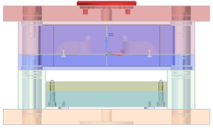
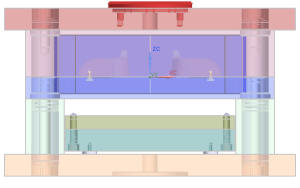
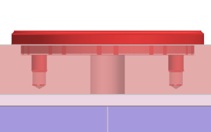
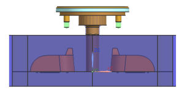

添加标准件
在注塑模向导标准件库中，您可以找到很多来自各个供应商的采购件，包括定位环，浇铸口衬套以及型芯顶杆。
-
点击资源条上的重用库
 选项卡。
选项卡。 -
展开成员选择面板，并确保从上方的列表中选择的是标题和全部查看。
-
在主面板中，展开 MW 标准件库。
-
展开 DME_MM 列表。
-
选择注塑(Injection)文件夹。
-
在成员选择面板中，右击 Locating Ring [With Screws]并选择插入。
-
右击视图背景并从视图快捷菜单中选择定向视图→前视图。
-
点击应用。

-
在标准件管理对话框的放置组中，从引用集列表中选择整个部件，然后点击确定。
True、False 以及整个部件指的是引用集。

您可以看到透明的预览体，这些体表示丝锥直径，以及安装螺钉的钻孔深度。

这些体将被腔体命令所使用。
-
在重用库中的注塑模向导标准件库中，展开 HASCO_MM 节点。
-
选择 Injection。
-
在成员选择面板中，右击 Sprue_Bushing [Z50, Z51, Z511,Z512]并选择插入。
-
在详细信息组中，选择 CATALOG_LENGTH，并在值列中键入64并回车。
-
点击确定。
注释
下图中的装配已经隐藏了某些部件，以使结果显示更清晰。

-
选择文件→全部保存。